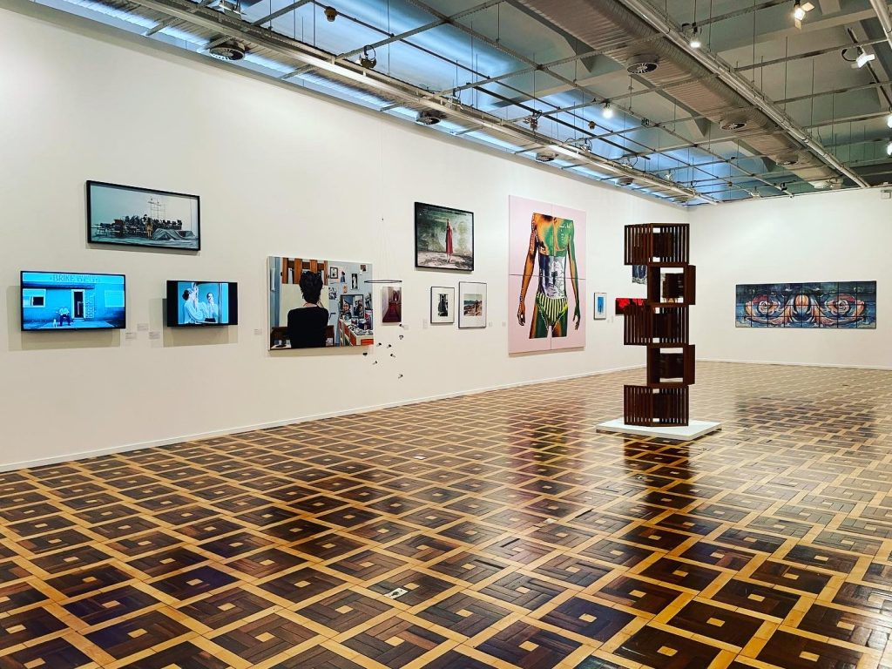

Porto Alegre
Porto Alegre, a capital do estado do Rio Grande do Sul, é uma cidade rica em história, cultura e belezas naturais, localizada no sul do Brasil. Como um dos principais centros urbanos da região, Porto Alegre atrai turistas tanto por sua diversidade cultural quanto por suas opções de lazer e contato com a natureza. A cidade é conhecida por seu ambiente acolhedor e suas influências culturais que mesclam a tradição gaúcha com influências de imigrantes europeus.
Com uma forte tradição cultural, Porto Alegre oferece ao visitante uma combinação única de museus, teatros, praças e monumentos históricos. Além disso, a cidade é famosa por sua gastronomia típica, como o churrasco gaúcho e pratos a base de carne, além de contar com belos parques e áreas naturais que proporcionam atividades ao ar livre. Porto Alegre também é um importante centro de eventos, com destaque para o Festival de Cinema de Gramado e o Mercadão Municipal, onde é possível apreciar a cultura local de maneira autêntica.
Principais pontos turísticos
- Redenção (Parque Farroupilha)
- Mercado Público de Porto Alegre
- Fundação Ibere Camargo
- Caminho dos Antiquários
- Ponte dos Catos

A Praça da Redenção é um dos maiores e mais tradicionais espaços públicos de Porto Alegre. O parque conta com amplos espaços verdes, lagos, quadras esportivas e uma área para eventos culturais. Aos domingos, a praça ganha vida com feiras de artesanato, apresentações culturais e um grande número de pessoas que aproveitam o local para atividades ao ar livre.
A Redenção é um símbolo da cidade e um ponto de encontro cultural e social, sendo o local ideal para quem deseja relaxar e curtir a vida local.
O Mercado Público é um dos locais mais tradicionais e visitados de Porto Alegre. Inaugurado em 1869, é o centro de compras e gastronomia da cidade, com barracas que vendem desde frutas e verduras frescas até produtos típicos e artesanatos. No local, há também diversos restaurantes que servem pratos tradicionais da culinária gaúcha.
O Mercado Público é o lugar ideal para conhecer a gastronomia local e a cultura porto-alegrense, além de ser um marco histórico da cidade.
A Fundação Ibere Camargo é um dos espaços de arte mais importantes de Porto Alegre. O edifício, projetado pelo arquiteto Álvaro Siza, é uma obra-prima da arquitetura moderna e abriga uma coleção de arte contemporânea. O local também oferece uma vista deslumbrante para o Lago Guaíba, além de ser um espaço para exposições e eventos culturais.
A Fundação Ibere Camargo é essencial para quem deseja explorar o cenário artístico e cultural de Porto Alegre, com uma programação variada e um ambiente único.
O Caminho dos Antiquários é uma rua charmosa repleta de lojas especializadas em objetos antigos e colecionáveis. Localizado no Centro Histórico, o lugar oferece uma experiência única para quem deseja explorar peças de arte, móveis antigos e artigos de decoração com um toque de nostalgia.
Para os amantes de antiguidades e história, o Caminho dos Antiquários é uma excelente opção para passeios e compras de itens exclusivos.
A Ponte dos Catos é uma das pontes históricas da cidade e um ponto turístico ideal para quem gosta de caminhadas. Ela está localizada sobre o rio Guaíba e oferece uma bela vista da região. É um ótimo lugar para quem deseja tirar fotos e apreciar o pôr do sol.
Este ponto turístico é uma boa opção para quem deseja apreciar a paisagem de Porto Alegre e explorar um dos seus marcos históricos.
Principais pontos gastronômicos
- Giovanaz
- Localização: Bairro Cidade Baixa.
- Churrascaria Barranco
- Localização: Bairro Petrópolis.
- Prato Verde
- Localização: Bairro Bom Fim.
- Peppo Cucina
- Localização: Bairro Rio Branco.
Um clássico da cidade que dispensa apresentações. A Giovanaz faz parte da memória afetiva de muito porto-alegrense com seu espeto corrido tradicional e acompanhamentos como a salada de maionese e a polentinha.
Aos finais de semana, a fila já é de praxe, então, chegue cedo. Um ótimo local para se aproveitar do melhor da culinária gaúcha.
Esse restaurante é considerado um patrimônio gaúcho das carnes. Funcionando há mais de quatro décadas no bairro Petrópolis, o Barranco é um verdadeiro paraíso para quem aprecia um bom churrasco. A variedade de preparo das carnes é impressionante, e o “chopp” servido sempre bem gelado completa a experiência maravilhosa de comer no local.
Além das carnes, o carrinho de saladas também é muito caprichado, e as porções e acompanhamentos são sempre bem servidas. Dentre os pratos, há os famosos lombo com queijo, a Picanha Angus e a Picanha Barranco. E para quem gosta de um bom vinho, o espaço tem uma ótima carta com rótulos nacionais e importados.
Para quem é vegetariano e está preocupado em não encontrar locais para comer em Porto Alegre, fique tranquilo. O Prato Verde é um restaurante amado por vegetarianos e também pelos carnívoros. O espaço oferece um buffet super variado com opções deliciosas sem carne, e tudo feito com vegetais 100% orgânicos e comprados dos pequenos produtores locais.
As receitas são todas exclusivas, e o que não falta é variedade. E pode comer sem culpa, a comida é bem saudável, sempre fresquinha e com muitas opções de pratos quentes e saladas.

Para quem é apaixonado pela culinária italiana, precisa conhecer o Peppo Cucina, que fica no bairro Rio Branco. O menu é todo preparado de forma artesanal, o cuidado com o sabor dos pratos é especial, e as opções de massas e carnes são muito variadas. Não saia sem experimentar o Ravioli Di Rucola e Uvetta, preparado com recheio de rúcula, ricota, uvas passas e nozes, ao molho de funghi seco, damasco turco e conhaque.
E para os veganos e vegetarianos, o espaço oferece sete pratos sem carne. Uma ótima pedida é o Burger ai Funghi Freschi, feito com hambúrguer vegetal grelhado ao molho de cogumelos frescos e ervas no azeite, acompanhado de risoto de castanhas e cogumelos.
Principais pontos culturais
- Teatro São Pedro
- Localização: Centro de Porto Alegre.
- Fundação Ibere Camargo
- Localização: Zona Sul de Porto Alegre.
- Museu de Arte do Rio Grande do Sul (MARGS) 
- Localização: Centro de Porto Alegre.
- Museu da Comunicação Hipólito José da Costa
- Localização: Centro de Porto Alegre.
O Teatro São Pedro é um dos mais importantes teatros de Porto Alegre, com uma programação cultural que inclui peças de teatro, concertos e óperas. O teatro é considerado um dos marcos da cultura porto-alegrense e é conhecido por sua excelente acústica e beleza arquitetônica.
O Teatro São Pedro é uma excelente opção para quem deseja apreciar as artes cênicas e musicais de Porto Alegre, com uma programação cultural variada e de alta qualidade.
Além de ser um espaço de arte contemporânea, a Fundação Ibere Camargo realiza eventos culturais, exposições e apresentações artísticas. O local é um exemplo de arquitetura moderna e oferece uma vista panorâmica do Lago Guaíba.
É um dos principais centros de arte contemporânea do sul do Brasil e uma visita obrigatória para quem deseja explorar a cena artística de Porto Alegre.
O MARGS é um dos principais museus de arte da cidade, com um acervo diversificado que abrange obras de artistas regionais e nacionais. Além das exposições permanentes, o MARGS também realiza exposições temporárias de arte contemporânea.
Para os amantes de arte, o MARGS oferece uma oportunidade única de conhecer o melhor da arte visual de Porto Alegre e do Brasil.

Localizado na antiga sede do jornal A Federação, esse museu foi criado com o objetivo de divulgar a história da comunicação do Rio Grande do Sul. Desse modo, os pavimentos são utilizados para exposições fotográficas e exibições de peças de diferentes períodos do jornalismo.
As visitas podem ser feitas de terça a sábado das 10h às 18h.